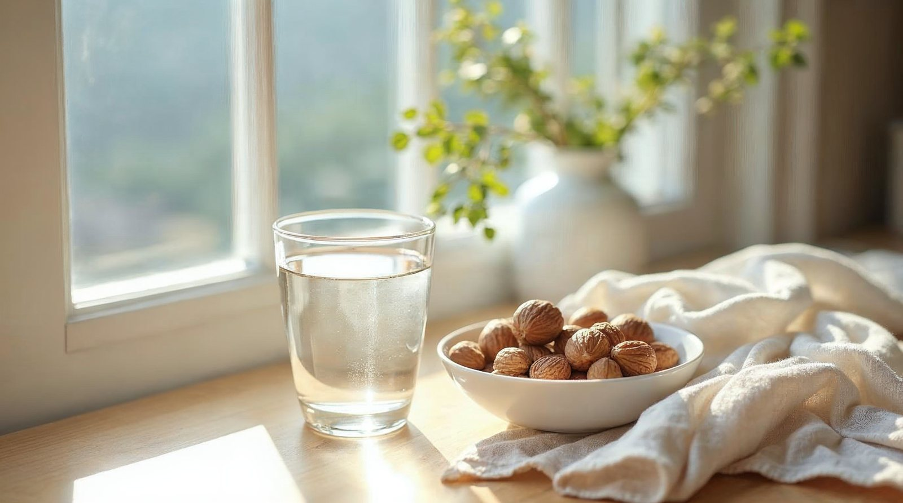
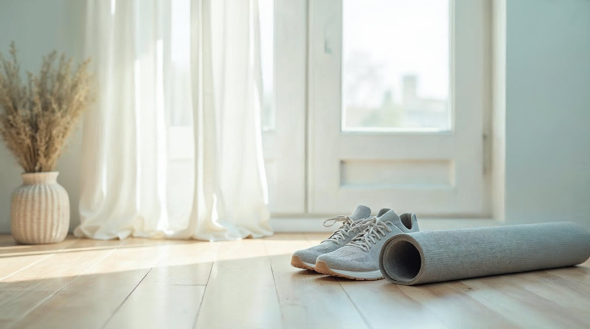
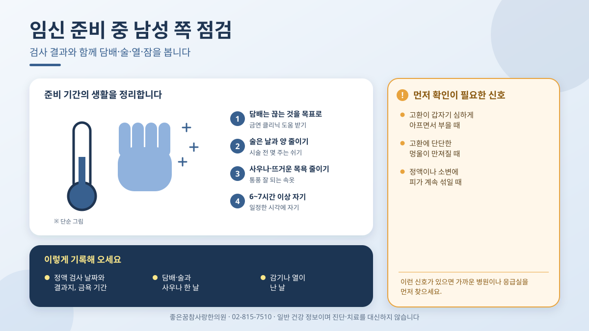

이종호 한의사 감수좋은꿈참사랑한의원 대표원장 (한의사 면허번호 19769)발행 2026-11-26 · 수정 2026-11-27
이 글의 차례
아내가 조심스럽게 말을 꺼냅니다. "병원에서 당신도 검사를 받아 보래." 별일 아니라고 웃어넘기지만, 비뇨의학과 대기실에 앉아 있는 동안 괜히 손바닥에 땀이 납니다. 며칠 뒤 받은 결과지에는 낯선 숫자와 '참고치 미만'이라는 글자가 적혀 있습니다. 그날 저녁, 아내에게 뭐라고 말해야 할지 모르겠습니다.
임신이 잘 되지 않을 때 많은 분이 여성 쪽 검사부터 떠올립니다. 그런데 난임의 원인은 남성 쪽에도 상당 부분 있고, 부부 모두에게 원인이 함께 있는 경우도 적지 않다고 알려져 있습니다. 그래서 임신 준비는 처음부터 부부가 함께 살피는 일입니다.
진료실에서 남성분들은 이 이야기를 무척 어렵게 꺼내십니다. 자존심이 상하고, 아내에게 미안하고, 무엇을 해야 할지 막막하다고 하십니다.
저는 먼저 말씀드립니다. 정액 검사 수치는 그 사람의 가치를 말하는 숫자가 아니라, 지금 몸의 상태를 보여 주는 한 장의 사진이라고요. 그 사진은 생활에 따라 달라질 수 있습니다. 그리고 그 생활은 혼자가 아니라 부부가 함께 바꿔 갈 수 있습니다.
왜 남성 쪽도 함께 살펴야 할까요
정자는 고환에서 만들어져 자라기까지 대략 두세 달, 흔히 약 3개월이 걸린다고 알려져 있습니다. 그래서 오늘 받은 정액 검사 결과는 지난 석 달 동안의 몸 상태를 반영합니다. 반대로 말하면, 지금부터의 석 달이 다음 검사 결과에 영향을 줄 수 있다는 뜻이기도 합니다.
정자가 만들어지는 데는 온도가 중요합니다. 고환이 몸 바깥에 있는 것은 체온보다 조금 낮은 온도에서 정자가 잘 만들어지기 때문입니다. 오랜 사우나, 뜨거운 목욕, 무릎 위 노트북, 꽉 끼는 속옷, 오래 앉아 있는 일처럼 고환을 따뜻하게 만드는 생활이 정자에 부담이 될 수 있다고 알려져 있습니다.
담배와 과음, 비만, 잠 부족, 오랜 스트레스도 정자의 수와 움직임에 영향을 준다고 알려져 있습니다. 근육을 키우려고 쓰는 남성호르몬 제제나 일부 약은 오히려 정자 생성을 크게 떨어뜨릴 수 있어, 드시는 약과 보충제를 꼭 확인합니다.
고환 위쪽 혈관이 늘어나는 정계정맥류, 과거의 볼거리 고환염, 사타구니 수술, 호르몬 이상, 유전적 원인처럼 진료로 확인해야 하는 원인도 있습니다. 이런 부분은 비뇨의학과 진찰과 검사가 중심입니다.
한의학에서는 정(精)을 몸의 바탕을 이루는 귀한 것으로 보아, 지나친 피로와 과음, 잠 부족이 정을 소모한다고 여겨 왔습니다. 그래서 정액 검사 숫자만이 아니라 피로와 잠, 허리와 아랫배, 소화를 함께 살핍니다.

정액 검사 결과지, 이렇게 읽어 봅니다
정액 검사 결과지에는 여러 숫자가 적혀 있습니다. 정확한 판정은 검사한 병원의 설명을 따르시고, 여기서는 이해를 돕는 정도로만 나눠 보겠습니다.
정액의 양과 정자 수
한 번 사정한 정액의 양과, 그 안에 든 정자의 농도와 총수입니다. 수가 참고치보다 적은 경우를 흔히 정자 감소라고 부릅니다. 정자가 전혀 보이지 않는 경우는 원인을 찾는 검사가 더 필요해 비뇨의학과와 꼼꼼히 상의해야 합니다.
운동성
정자가 얼마나 앞으로 잘 움직이는지를 보는 숫자입니다. 정자가 난자까지 가려면 움직임이 중요해서, 진료실에서 가장 많이 여쭤보시는 항목이기도 합니다.
모양
정상 모양을 가진 정자의 비율입니다. 기준이 꽤 엄격해서 낮게 나오는 경우가 드물지 않습니다. 숫자 하나만 보고 놀라기보다 검사한 병원의 설명을 함께 들어 보세요.
정액 검사는 같은 사람이라도 검사할 때마다 결과가 꽤 달라질 수 있습니다. 감기로 열이 났거나, 잠을 못 잤거나, 금욕 기간이 달랐다면 숫자가 흔들립니다. 그래서 한 번의 결과로 결론을 내리기보다, 병원 안내에 따라 다시 검사해 흐름을 보는 경우가 많습니다.
나이와 기간도 함께 봅니다
임신 준비에서 아내분의 나이를 많이 이야기하지만, 남성의 나이도 정자의 질과 관련이 있다고 알려져 있습니다. 그렇다고 겁낼 일은 아닙니다. 준비 기간이 길어지고 있다면 남성 쪽 검사와 생활 점검을 미루지 말고 함께 시작하자는 뜻입니다.
일반적으로는 피임 없이 1년이 지나도 임신이 되지 않을 때, 아내분의 나이가 많다면 그보다 이른 시기에 부부가 함께 검사를 받아 보도록 안내받는 경우가 많습니다. 검사는 부부 가운데 한 사람을 탓하려는 것이 아니라 다음 걸음을 정하기 위한 지도입니다.
스스로 점검해 보세요
아래 가운데 해당하는 줄에 표시해 두셨다가 진료 때 보여 주세요. 진단을 내리려는 목록은 아닙니다.
- 담배를 피우거나, 일주일에 술을 세 번 넘게 마신다
- 사우나나 뜨거운 목욕을 자주 한다
- 하루 대부분 앉아서 일하고, 무릎에 노트북을 올려 쓴다
- 잠이 6시간이 안 되는 날이 많다
- 최근 몇 년 사이 체중과 뱃살이 많이 늘었다
- 근육 보충제나 호르몬 제제를 쓴 적이 있다
- 고환이 한쪽만 묵직하거나, 서 있으면 당기는 느낌이 있다
진료실에서 자주 듣는 걱정
성생활이 잦으면 정자가 줄어드는지, 아끼는 게 좋은지 묻는 분이 많습니다. 너무 오래 참으면 오히려 움직임이 떨어질 수 있다고 알려져 있어, 배란기 무렵 이틀에 한 번 정도 관계를 갖도록 안내받는 경우가 많습니다. 구체적인 방법은 난임 병원 안내를 따르세요.
휴대폰을 바지 주머니에 넣어도 되는지 묻는 분도 있습니다. 연구마다 결과가 엇갈려 단정하기 어렵지만, 신경이 쓰인다면 가방이나 윗옷 주머니에 넣어 두는 정도는 어렵지 않게 해 볼 수 있습니다.
먼저 이렇게 여쭙니다
진료실에서는 맥을 짚으며 대략 이런 순서로 여쭙습니다. 대답하기 어려운 질문은 건너뛰셔도 괜찮습니다.
- 정액 검사는 언제, 몇 번 받으셨고 어떤 설명을 들으셨나요?
- 비뇨의학과에서 정계정맥류나 다른 진단을 들은 적이 있나요?
- 담배와 술은 어느 정도인가요? 사우나는 자주 하시나요?
- 잠은 몇 시간, 일은 앉아서 하시나요, 교대 근무인가요?
- 드시는 약, 탈모약, 보충제, 근육 보충제가 있나요?
- 어릴 때 고환 수술이나 볼거리를 앓은 적이 있나요?
- 아내분은 지금 어떤 진료와 시술 일정을 갖고 계신가요?
아내분의 일정을 여쭙는 이유는 남성 쪽 준비도 그 시기에 맞춰야 하기 때문입니다. 시험관 시술이나 인공수정 날짜가 정해져 있다면, 그날까지 남은 기간 동안 무엇을 먼저 챙길지 거꾸로 계산해 봅니다.
일상에서 먼저 해 볼 수 있는 것
정자가 만들어져 자라는 데 석 달쯤 걸리니, 생활을 바꾸면 그 변화가 다음 석 달에 담길 수 있습니다. 결과를 약속드릴 수는 없지만, 부부가 함께 해 볼 만한 일이 많습니다.
- 담배는 끊는 것을 목표로, 어렵다면 금연 클리닉 도움 받기
- 술은 일주일에 마시는 날과 양을 줄이고, 시술 전 몇 주는 쉬어 가기
- 사우나와 뜨거운 목욕, 반신욕은 준비 기간 동안 줄이기
- 꽉 끼는 속옷 대신 통풍이 잘 되는 속옷 입기
- 노트북은 책상 위에서 쓰고, 한 시간에 한 번은 일어나 걷기
- 잠을 6~7시간 이상, 일정한 시각에 자기
- 하루 30분 걷기와 가벼운 근력 운동을 일주일에 몇 번 넣기
먹는 것도 함께 챙겨 보세요. 채소와 과일, 생선, 견과류, 통곡물을 고루 먹고, 가공육과 단 음료, 늦은 야식을 줄이는 식사가 정자 건강에 보탬이 될 수 있다는 연구들이 있습니다. 특정 음식 하나에 기대기보다 전체 식사의 모양을 바꾸는 편을 권합니다.
체중이 많이 늘었다면 천천히 줄여 보는 것도 의미가 있습니다. 다만 급하게 굶으면 몸에 또 다른 부담이 되니, 한 달에 1~2kg 정도 천천히 가는 편을 권합니다. 고강도 운동을 갑자기 몰아서 하기보다 꾸준히 이어 갈 수 있는 운동을 고르세요.
영양제를 여러 가지 한꺼번에 드시는 분도 많습니다. 드시고 있다면 이름과 양을 모두 적어 오세요. 남성호르몬 성분이 든 제품이나 근육 보충제는 오히려 정자 생성을 떨어뜨릴 수 있어, 비뇨의학과와 상의 없이 시작하지 않으시길 권합니다.
시술 일정이 잡혀 있다면
인공수정이나 시험관 시술 날짜가 정해져 있다면, 남은 기간을 거꾸로 세어 보세요. 석 달이 남았다면 생활 전체를 바꿔 볼 여유가 있고, 몇 주밖에 남지 않았다면 술과 담배, 사우나, 열처럼 당장 피할 수 있는 것부터 챙기는 편이 현실적입니다.
채취 날을 앞두고는 병원에서 안내한 금욕 기간을 지키시고, 그 주에는 과음과 밤샘을 피해 주세요. 채취 날 아침에 긴장해서 잘 안 될까 걱정하시는 분도 많은데, 미리 병원에 방법과 장소를 물어 두면 마음이 한결 가벼워집니다.
일터의 열과 자세도 살펴봅니다
직업에 따라 고환이 오래 따뜻해지는 환경도 있습니다. 하루 종일 운전하는 분, 뜨거운 주방이나 공장에서 일하는 분, 오래 앉아 있는 사무직은 생각보다 고환 주변 온도가 높게 유지될 수 있다고 알려져 있습니다.
일을 바꾸기는 어렵지만, 한 시간에 한 번 일어나 걷고, 통풍이 잘 되는 바지와 속옷을 입고, 운전석 열선은 꺼 두는 것만으로도 할 수 있는 것은 해 본 셈입니다. 페인트나 용제, 농약처럼 화학물질을 다루는 일이라면 보호구를 잘 챙기시고 진료 때 알려 주세요.
마음의 무게도 나눠 지세요
난임 준비는 몸만큼 마음도 지칩니다. 남성분들은 내색을 잘 안 하시지만, 검사 결과를 받은 뒤 자신감이 떨어지고, 아내에게 미안한 마음에 말수가 줄며, 부부 관계가 숙제처럼 느껴진다고 털어놓으시곤 합니다.
배란일에 맞춘 부부 관계가 반복되면 둘 다 긴장하고 지치기 쉽습니다. 이 긴장이 발기나 사정에 영향을 주기도 합니다. 그럴 때는 "이번 달은 숫자 생각하지 말자"며 서로 쉬어 가는 달을 두는 것도 방법입니다.
아내분도 검사와 시술로 몸과 마음이 지쳐 있는 경우가 많습니다. 결과지를 함께 펼쳐 보고, 서로 무엇이 가장 힘든지 이야기하는 시간을 가져 보세요. 한 사람의 탓으로 돌리지 않고, 같은 편이라는 마음으로 함께 준비하는 것이 무엇보다 중요합니다. 마음이 깊이 가라앉아 있다면 난임 상담 기관의 도움을 받아 보셔도 좋습니다.
생활을 한꺼번에 다 바꾸려 하면 오래가지 못합니다. 이번 달에는 담배, 다음 달에는 술과 잠처럼 하나씩 차례를 정해 보세요. 부부가 같이 걷는 시간을 정해 두면 서로에게 좋은 약속이 됩니다.
한의원에서 함께 살필 수 있는 경우
정액 검사와 원인 진단, 수술이나 약 치료는 비뇨의학과가 중심입니다. 한의원 진료는 그와 나란히, 생활과 몸 전체의 흐름을 돌보는 쪽으로 함께하실 수 있습니다.
- 피로가 깊고 잠이 얕으며, 허리와 아랫배가 차고 무거운 경우
- 과음과 야근, 교대 근무로 생활 리듬이 무너진 경우
- 시술 일정을 앞두고 부부가 함께 몸 상태를 점검하고 싶은 경우
- 긴장과 스트레스로 소화와 잠이 함께 흔들리는 경우
좋은꿈참사랑한의원에 오시면 모두 맥부터 짚으며 피로와 잠, 소변, 소화, 몸의 온도를 여쭙습니다. 검사 결과를 함께 보고, 침과 한약 상담, 생활 관리 가운데 지금 몸에 맞는 방법을 함께 정합니다.
한약을 상의할 때는 드시는 약과 보충제, 비뇨의학과 치료 일정을 모두 확인한 뒤 신중하게 정합니다. 한의원 진료가 검사 수치나 임신을 약속하지는 않습니다. 정자가 만들어지는 석 달을 몸이 조금 더 편하게 지나도록 돕는 일이라고 생각해 주세요.
동작구에 사신다면 지역의 한의약 난임 지원 사업이 있는지도 함께 알아보세요. 대상과 조건은 해마다 달라질 수 있어 보건소에 확인하시는 편이 정확합니다.

이렇게 기록해 오시면 상담이 쉬워집니다
석 달 단위로 몸이 바뀌는 만큼, 기록도 석 달을 내다보고 시작해 보세요.
- 정액 검사 날짜와 결과지, 금욕 기간
- 담배를 피운 날, 술을 마신 날과 양
- 잠든 시각과 깬 시각, 야근이나 교대 근무 일정
- 사우나나 뜨거운 목욕을 한 날
- 걷기와 운동을 한 날
- 감기나 열이 난 날(검사 결과에 영향을 줄 수 있음)
- 아내분의 진료와 시술 일정
열이 난 날을 적어 두는 이유가 있습니다. 고열은 몇 주 뒤의 정액 검사 결과를 흔들 수 있다고 알려져 있어서, 재검을 앞두고 결과를 읽을 때 중요한 단서가 됩니다.
검사 결과지를 받아 든 날의 막막함, 잘 압니다. 그래도 정자는 지금도 새로 만들어지고 있습니다. 오늘부터 할 수 있는 것을 부부가 하나씩 함께 해 보세요. 다음에 오시면 지난 몇 주 술과 잠이 어땠는지부터 여쭙겠습니다.
이런 증상은 먼저 확인이 필요합니다
- 고환이 갑자기 심하게 아프거나 붓는 경우, 통증이 아랫배까지 번지는 경우
- 고환에 단단한 멍울이 만져지거나, 정액이나 소변에 피가 계속 섞이는 경우
이런 신호가 있으면 한의원보다 가까운 병원이나 응급실을 먼저 찾으세요.
함께 읽으면 좋은 글
- 아이를 갖고 싶어 진료를 받을 때 한의원에 무엇을 알려야 하나요?
- 임신을 준비하는 부부는 생활에서 무엇부터 함께 점검하나요?
- 임신을 준비하며 부부가 함께 한약 상담을 받을 때는 무엇을 준비하면 되나요?
- 동작구 한의약 난임치료 지원사업은 어떻게 알아보나요?

여쭙는 것
- 정액 검사는 언제, 몇 번 받으셨고 어떤 설명을 들으셨나요?
- 비뇨의학과에서 정계정맥류나 다른 진단을 들은 적이 있나요?
- 담배와 술은 어느 정도인가요? 사우나는 자주 하시나요?
생활에서 해 볼 것
- 담배는 끊는 것을 목표로, 어렵다면 금연 클리닉 도움 받기
- 술은 일주일에 마시는 날과 양을 줄이고, 시술 전 몇 주는 쉬어 가기
- 사우나와 뜨거운 목욕, 반신욕은 준비 기간 동안 줄이기
한의원에서 함께 살필 것
- 피로가 깊고 잠이 얕으며, 허리와 아랫배가 차고 무거운 경우
- 과음과 야근, 교대 근무로 생활 리듬이 무너진 경우
- 시술 일정을 앞두고 부부가 함께 몸 상태를 점검하고 싶은 경우
먼저 확인이 필요한 신호
- 고환이 갑자기 심하게 아프거나 붓는 경우, 통증이 아랫배까지 번지는 경우
- 고환에 단단한 멍울이 만져지거나, 정액이나 소변에 피가 계속 섞이는 경우
한눈에 보는 표
| 구분 | 핵심 |
|---|---|
| 여쭙는 것 | 정액 검사는 언제, 몇 번 받으셨고 어떤 설명을 들으셨나요? 비뇨의학과에서 정계정맥류나 다른 진단을 들은 적이 있나요? |
| 생활에서 해 볼 것 | 담배는 끊는 것을 목표로, 어렵다면 금연 클리닉 도움 받기 술은 일주일에 마시는 날과 양을 줄이고, 시술 전 몇 주는 쉬어 가기 |
| 한의원에서 함께 살필 것 | 피로가 깊고 잠이 얕으며, 허리와 아랫배가 차고 무거운 경우 과음과 야근, 교대 근무로 생활 리듬이 무너진 경우 |
| 먼저 확인이 필요한 신호 | 고환이 갑자기 심하게 아프거나 붓는 경우, 통증이 아랫배까지 번지는 경우 고환에 단단한 멍울이 만져지거나, 정액이나 소변에 피가 계속 섞이는 경우 |
자주 묻는 질문
정액 검사 결과가 나쁘면 자연 임신이 어려운가요?
한 번의 결과로 판단하기는 어렵습니다. 정액 검사는 검사할 때마다 흔들릴 수 있어서, 비뇨의학과 안내에 따라 다시 검사하고 아내분의 상태와 함께 보며 방향을 정합니다.
생활을 바꾸면 언제쯤 검사에 반영되나요?
정자가 만들어지는 데 약 3개월이 걸린다고 알려져 있어, 생활의 변화는 대개 그 뒤의 검사에 담깁니다. 재검 시기는 비뇨의학과와 상의하세요.
남편도 한약을 먹어도 되나요?
드시는 약과 보충제, 검사 결과, 치료 일정을 확인한 뒤 신중하게 정합니다. 결과를 약속드리기보다 몸 상태를 함께 돌보는 쪽으로 상의합니다.
정계정맥류가 있다고 하는데 꼭 수술해야 하나요?
수술 여부는 크기와 증상, 정액 검사 결과, 부부의 상황을 함께 보고 비뇨의학과에서 정합니다. 들은 설명을 진료 때 알려 주시면 그에 맞춰 함께 살핍니다.
부부가 함께 진료를 받을 수 있나요?
함께 오셔도 좋습니다. 일정과 생활을 한자리에서 이야기하면 서로 무엇을 챙길지 정하기가 훨씬 쉬워집니다.
좋은꿈참사랑한의원은 재진 때 지난번 이야기부터 이어서 여쭙니다. 진료시간과 예약은 오시는 길에서 확인하세요.
어디서 상담받을 수 있나요?
좋은꿈참사랑한의원은 서울 동작구 만양로2길 2 신성빌딩 3층·5층(서울 동작구 상도동, 7호선 상도역 3번 출구 근처)에 있습니다. 한의사 3명(이종호 대표원장, 조영기 수석진료원장, 정원영 진료원장)이 진료합니다. 진료시간은 평일 09:30~20:00(점심 13:00~14:00), 토·일·공휴일 09:30~15:00이며, 방문 전 전화로 확인을 권합니다. 예약은 네이버 예약, 카카오톡 상담, 전화 02-815-7510로 받습니다.
이 글은 일반적인 건강 정보이며 개인의 진단이나 치료를 대신하지 않습니다. 증상이 있거나 복용 중인 약이 있다면 진료를 통해 확인하세요. 치료 효과는 개인마다 다를 수 있습니다.
작성 기준: 일반적으로 알려져 있는 건강 정보를 참고해 정리했습니다(대표원장 감수). 증상 기록은 1~2주 동안 하루 1회, 비슷한 시간에 적어 오시면 지난 상태와 비교하기 쉽습니다.